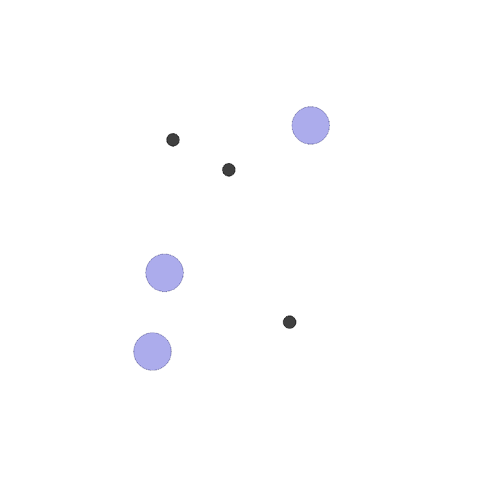

PettingZoo¶
概述¶
PettingZoo 是一个用于研究多智能体强化学习的 Python 库，可以认为是多智能体版本的 Gym。它包含以下几个环境家族：
Atari：多人 Atari 2600 游戏，包括合作、竞争以及混合等场景
Butterfly：PettingZoo 团队自己开发的需要高度协调的合作性图形游戏
Classic：经典游戏，包括纸牌、棋盘游戏等
MAgent：可配置的，具有大量数量粒子智能体的环境，源于 https://github.com/openai/multiagent-particle-envs
MPE：一组简单的非图形通信任务，源于 https://github.com/openai/multiagent-particle-envs
SISL：3 个合作环境，源于 https://github.com/sisl/MADRL
下图所示为其中的 mpe_simple_spread 环境：
Note
需要注意的是，PettingZoo 出于可重复的考虑，保持严格的版本管理。所有环境都以_v0 这样的后缀结尾。当环境发生变化而可能影响学习结果时，数字会增加一个（例如_v0->_v1），以防止潜在的混淆。
安装¶
安装方法¶
目前 PettingZoo 官方支持 Linux 和 macOS 上的 Python 3.7~3.9。
可以通过 pip 直接安装；此外，由于 DI-engine 中有单元测试用到了 PettingZoo，因此安装 DI-engine 也会默认安装 PettingZoo：
# Method1: Install directly with pip
pip install pettingzoo
# Method2: Just install DI-engine
pip install DI-engine
由于 PettingZoo 所包含的环境非常多，不同的环境在不同的系统上安装情况也各不相同。因此以上的安装并没有包含所有环境家族的所有依赖。对于特定的环境家族依赖，你可以这样安装：
# install Atari family dependency
pip install pettingzoo[atari]
# or install all dependencies
pip install pettingzoo[all]
验证安装¶
安装完成后，运行如下 Python 程序，如果没有报错则证明安装成功。
from pettingzoo.mpe import simple_spread_v2
env = simple_spread_v2.parallel_env()
obs = env.reset()
print(obs[env.agents[0]]) # (18,)
镜像¶
DI-engine 准备好了配备有框架本身和 PettingZoo 环境的镜像，可通过 docker pull opendilab/ding:nightly 获取，或访问 docker
hub 获取更多镜像
变换前的空间（原始环境）¶
由于 PettingZoo 包含很多环境家族，每个的情况各不相同，难以顾全所有内容。这里以 MPE 中的 Simple Spread 环境为例进行说明。
Note
Simple Spread 的游戏目标是希望智能体覆盖所有的地标的同时，避免彼此之间发生碰撞。
观察空间¶
智能体的观测由
当前智能体的速度，self.vel, (2,)
当前智能体的位置，self.pos, (2,)
地标的相对位置，landmark_rel_positions, (n_landmarks * 2,)
其他智能体的相对位置，other_agent_rel_positions, ((n_agents-1) * 2,)
其他智能体与当前智能体的通信，communication, ((n_agents-1) * 2,)
组成，具体维度为 (2 + 2 + n_landmarks*2 + (n_agents-1)*2 + (n_agents-1)*2)，数据类型为 float32。 例如，当你生成一个具有 5 个智能体（n_agents=5）与 5 个地标（n_landmarks=5）的 simple spread 环境时，每个智能体的观测维度为 (30,)。
动作空间¶
无法手动控制
离散动作空间：每个智能体的动作空间相同，大小为
(5,)，数据类型为gym.spaces.Discrete(5)。每个具体动作的维度为(,)，数据类型为int，具体含义是什么都不做或向四个基本方向进行移动。连续动作空间：每个智能体的动作空间相同，数据类型为
gym.spaces.Box(0.0, 1.0, (5,))。每个具体动作的维度为(5,)，数据类型为array，具体含义是什么都不做或向四个基本方向的每个方向上输入 0.0 到 1.0 之间的速度，且相反方向的速度可以叠加。
from pettingzoo.mpe import simple_spread_v2
# discrete env
dis_env = simple_spread_v2.parallel_env(N=3, continuous_actions=False)
# continuous env
con_env = simple_spread_v2.parallel_env(N=3, continuous_actions=True)
dis_env.reset()
con_env.reset()
dis_env.action_space('agent_0').sample() # 2
con_env.action_space('agent_0').sample() # array([0.24120373, 0.83279127, 0.4586939 , 0.4208583 , 0.97381055], dtype=float32)
Hint
注意这里我们使用的是 parallel_env() 来生成环境，该函数与普通的 env() 区别在于，在 paralle_env 环境下，所有 agent 的动作同时输入；相反，在 env 环境下，每个 agent 的动作是依次输入的。由于 paralle_env 更为方便，所以我们更为推崇，在DI-engine 封装的环境中，我们也是这么做的。
奖励空间¶
所有的智能体贡献一个全局奖励，依据距离每个地标的最近的智能体来判定，一个
float数值具体而言，所有的智能体都根据最近的智能体离每个地标的距离（最小距离的总和）来获得全局奖励。此外，如果智能体与其它智能体发生碰撞，他们将受到惩罚。
其他¶
游戏在执行完环境参数
max_cycles所指定的周期数后就会终止。所有环境的默认值是 25 个周期。
关键事实¶
输入为 state 而非 raw pixel；
既可以选择离散动作空间，也可以选择连续动作空间；
既有合作 (cooperation) 环境，例如
Simple Spread、Simple Speaker Listener等；也有竞争 (competitive) 环境，例如Simple Adversary、Simple Crypto等。
变换后的空间（RL 环境）¶
观察空间¶
针对多智能体算法，根据变换前的 state，分别生成了局部的 agent_state 和全局的 global_state：
agent_state: shape: (n_agent, 2 + 2 + n_landmark * 2 + (n_agent - 1) * 2 + (n_agent - 1) * 2)
智能体自己的状态：速度、坐标
其他智能体与地标的相对位置
来自其他智能体的通信
global_state: shape: (n_agent * (2 + 2) + n_landmark * 2 + n_agent * (n_agent - 1) * 2, )
所有智能体的状态：速度、坐标
所有地标的位置
所有智能体之间的通信
如果环境参数
action_specific_global_state=True，则每个智能体的 global_state 均不相同，由自己的 agent_state 和原 global_state 进行 concatenate 得到。
动作空间¶
离散动作空间无变换
连续动作空间，若环境变量
act_scale=True，则对动作值进行 affine 变换
奖励空间¶
无变化，为
gym.spaces.Box(low=float("-inf"), high=float("inf"), shape=(1, ), dtype=np.float32)
其他¶
惰性初始化¶
为了便于支持环境向量化等并行操作，环境实例一般实现惰性初始化，即__init__方法不初始化真正的原始环境实例，只是设置相关参数和配置值，在第一次调用reset方法时初始化具体的原始环境实例。
随机种子¶
环境中有两部分随机种子需要设置，一是原始环境的随机种子，二是各种环境变换使用到的随机库的随机种子（例如
random，np.random）对于环境调用者，只需通过环境的
seed方法进行设置这两个种子，无需关心具体实现细节环境内部的具体实现：对于原始环境的种子，在调用环境的
reset方法内部，具体的原始环境reset之前设置环境内部的具体实现：对于随机库种子，则在环境的
seed方法中直接设置该值
训练和测试环境的区别¶
训练环境使用动态随机种子，即每个 episode 的随机种子都不同，都是由一个随机数发生器产生，但这个随机数发生器的种子是通过环境的
seed方法固定的；测试环境使用静态随机种子，即每个 episode 的随机种子相同，通过seed方法指定。
存储录像¶
在环境创建之后，重置之前，调用enable_save_replay方法，指定游戏录像保存的路径。环境会在每个 episode 结束之后自动保存本局的录像文件。（默认调用gym.wrapper.Monitor实现，依赖ffmpeg）
DI-zoo 可运行代码示例¶
完整的训练配置文件在 github link
内，对于具体的配置文件，例如ptz_simple_spread_mappo_config.py，使用如下的 demo 即可运行：
from easydict import EasyDict
n_agent = 5
n_landmark = n_agent
collector_env_num = 8
evaluator_env_num = 8
main_config = dict(
exp_name='ptz_simple_spread_mappo_seed0',
env=dict(
env_family='mpe',
env_id='simple_spread_v2',
n_agent=n_agent,
n_landmark=n_landmark,
max_cycles=100,
agent_obs_only=False,
agent_specific_global_state=True,
continuous_actions=False,
collector_env_num=collector_env_num,
evaluator_env_num=evaluator_env_num,
n_evaluator_episode=evaluator_env_num,
stop_value=0,
),
policy=dict(
cuda=True,
multi_agent=True,
action_space='discrete',
model=dict(
action_space='discrete',
agent_num=n_agent,
agent_obs_shape=2 + 2 + n_landmark * 2 + (n_agent - 1) * 2 + (n_agent - 1) * 2,
global_obs_shape=n_agent * 4 + n_landmark * 2 + n_agent * (n_agent - 1) * 2,
action_shape=5,
),
learn=dict(
multi_gpu=False,
epoch_per_collect=5,
batch_size=3200,
learning_rate=5e-4,
# ==============================================================
# The following configs is algorithm-specific
# ==============================================================
# (float) The loss weight of value network, policy network weight is set to 1
value_weight=0.5,
# (float) The loss weight of entropy regularization, policy network weight is set to 1
entropy_weight=0.01,
# (float) PPO clip ratio, defaults to 0.2
clip_ratio=0.2,
# (bool) Whether to use advantage norm in a whole training batch
adv_norm=False,
value_norm=True,
ppo_param_init=True,
grad_clip_type='clip_norm',
grad_clip_value=10,
ignore_done=False,
),
collect=dict(
n_sample=3200,
unroll_len=1,
env_num=collector_env_num,
),
eval=dict(
env_num=evaluator_env_num,
evaluator=dict(eval_freq=50, ),
),
other=dict(eps=dict(
type='exp',
start=1.0,
end=0.05,
decay=100000,
), ),
),
)
main_config = EasyDict(main_config)
create_config = dict(
env=dict(
import_names=['dizoo.petting_zoo.envs.petting_zoo_env'],
type='petting_zoo',
),
env_manager=dict(type='subprocess'),
policy=dict(type='ppo'),
)
create_config = EasyDict(create_config)
ptz_simple_spread_mappo_config = main_config
ptz_simple_spread_mappo_create_config = create_config
if __name__ == '__main__':
# or you can enter `ding -m serial_onpolicy -c ptz_simple_spread_mappo_config.py -s 0`
from ding.entry import serial_pipeline_onpolicy
serial_pipeline_onpolicy((main_config, create_config), seed=0)
基准算法性能¶
TODO